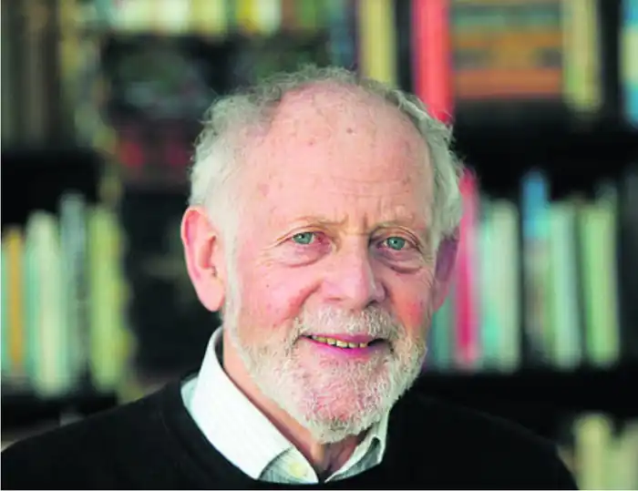

Сер Баррінгтон Віндзор "Баррі" Канліфф народився 10 грудня 1939 року.
Рішення Канліффа стати археологом було викликано відкриттям римських останків на фермі його дядька в Сомерсеті, коли йому було дев'ять років. Канліфф навчався в Північній гімназії Портсмута (тепер школа Мейфілд) і вивчав археологію та антропологію в коледжі Святого Джона в Кембриджі. Будучи студентом Кембриджського університету, він балотувався та виграв вибори проти свого однокурсника та колеги Джоніана Коліна Ренфрю, щоб стати президентом польового археологічного клубу Кембриджського університету (AFC). У 1963 році він став викладачем Брістольського університету. Зачарований римськими останками в сусідньому Баті, він розпочав програму розкопок і публікації.
У 1966 році він став надзвичайно молодим професором, коли зайняв кафедру нещодавно заснованого факультету археології в Саутгемптонському університеті. Там він брав участь у розкопках (1961–1968) римського палацу Фішборн у Західному Сассексі. Інше місце в південній Англії відвело його від римського періоду. Він розпочав довгу серію літніх розкопок (1969–1988) городища залізного віку в Дейнбері, Гемпшир, а згодом брав участь у Програмі околиць Дейнбері (1989–1995). Його інтерес до Британії та Європи залізного віку породив низку публікацій, і він став визнаним авторитетом у кельтах. У своїх пізніших роботах він висуває тезу про те, що кельтська культура виникла вздовж узбережжя Атлантичного океану в бронзовому столітті, перш ніж потрапити вглиб країни, що суперечить більш загальноприйнятій точці зору, що кельтське походження лежить у гальштатській культурі Альп. Один з його останніх проектів був у долині Наджерілья, Ла-Ріоха, Іспанія, яка розташована на "перетині між кельтиберським серцем центральної Іберії та атлантичною зоною Біскайської затоки". У 1979 році Канліфф був обраний членом Британської академії. Живе з дружиною в Оксфорді.